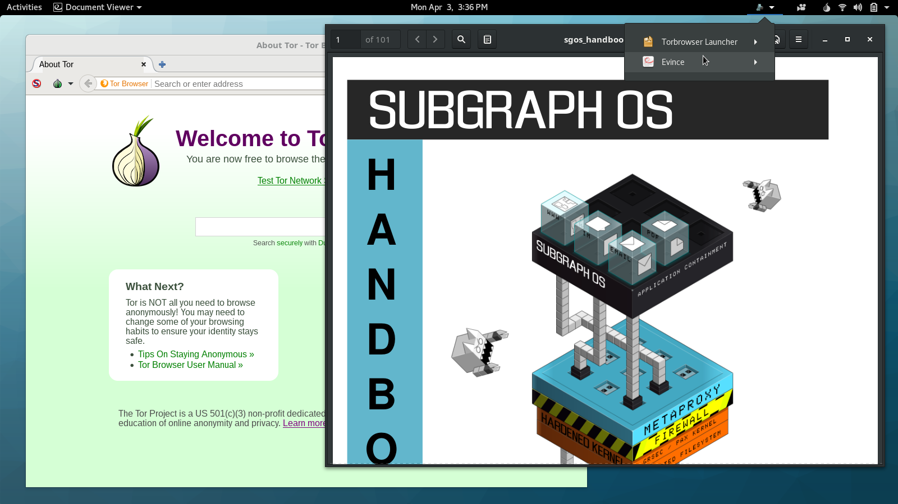

Tag: subgraph

Breaking the Security Model of Subgraph OS
I recently traveled to Amsterdam to attend a meeting with Tor Project staff, volunteers, and other members of the wider Tor community. Before trips like this, I prepare a separate travel computer, only bringing with me data and credentials that I might need during my trip. My primary laptop runs Qubes, but this time I decided to install Subgraph OS on my travel laptop. I had only briefly messed with it before, and there’s no better way to learn about a new operating system than by forcing yourself to actually use it for a few days.
Subgraph OS is an “adversary resistant computing platform.” It’s similar to Tails in that it’s based on Debian and all traffic is forced through Tor (that’s changing though: there’s now basic support for clearnet Chromium and OpenVPN). It uses a grsecurity Linux kernel, and many apps run in “oz sandboxes”, a homebrew sandbox solution that protects you even if an attacker manages to exploit a bug in one of these apps. Subgraph OS also includes the Subgraph Firewall, an application firewall similar to Little Snitch for macOS — something that’s pretty awesome, and hasn’t really existed in the Linux ecosystem before. Basically, it’s designed to be an easy-to-use Linux distro that’s extremely secure.